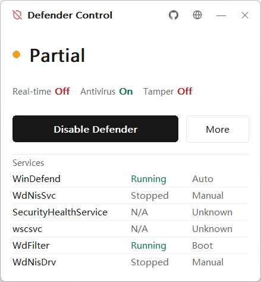
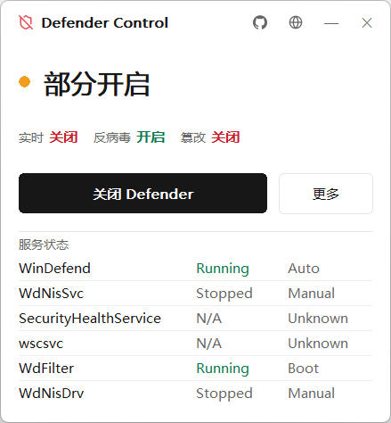
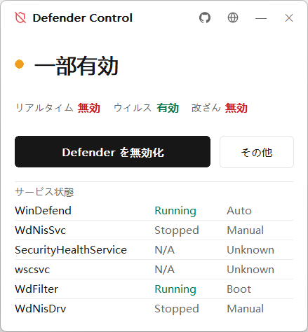

One-click toggle
Real-time protection, antivirus, tamper protection, services and drivers — switched together by one button that reflects the current state.
A tiny native tool that disables and re-enables Windows Defender from a single, state-aware button — with a backup, a restore point, and a full reverse path. No WebView. No runtime. Just the OS.

Built as a single owner-drawn Win32 surface — fast, small, and predictable.
Real-time protection, antivirus, tamper protection, services and drivers — switched together by one button that reflects the current state.
Exports your Defender registry before disabling and imports it again on enable. Falls back to sane defaults when no backup exists.
Impersonates a TI token to reliably write protected keys and PPL services that normal admin rights can't touch.
An optional logon task re-suppresses Defender the instant Windows touches the key — event-driven, near-zero idle CPU.
Overall state with a colored dot, plus real-time / antivirus / tamper indicators and a per-service detail panel.
Pure Win32 with hand-drawn GDI in Rust. ~300 KB, a rounded borderless DWM window, no WebView, no runtime dependencies.
Every change runs under an impersonated TrustedInstaller token, and the disable path is fully reversible.
A System Restore point is created and the touched Defender registry is exported before anything changes.
Policy keys, service Start types, WdFilter altitude, PPL flags, Set-MpPreference, and an IFEO block on mpcmdrun.exe.
Watch mode blocks on the key via RegNotifyChangeKeyValue; enabling imports the backup and restores every default.
简体中文 · English · 日本語 · 한국어 — switchable from the title bar, and remembered.


No framework, no abstraction tax — the binary talks to Win32 directly.
policy Defender policy registry keys
services driver & service Start types
altitude remove WdFilter altitude value
ppl strip service PPL flags
mp Set-MpPreference (PowerShell)
ifeo block mpcmdrun.exe
token impersonate TrustedInstallerDisabling Defender lowers your system's security. Use this only on machines you own. A restore point and registry backup are created, but you are responsible for how you use it.
Download the binary or build it yourself with cargo build --release.